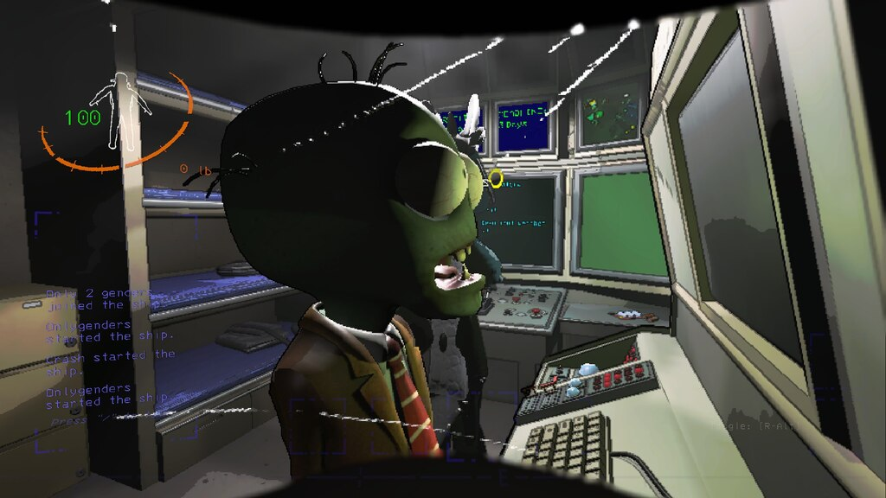
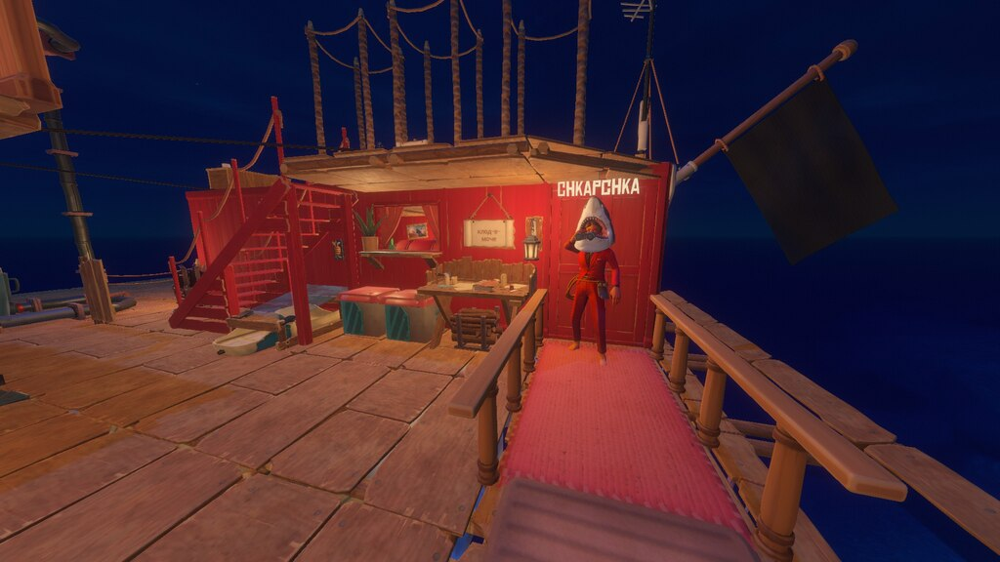
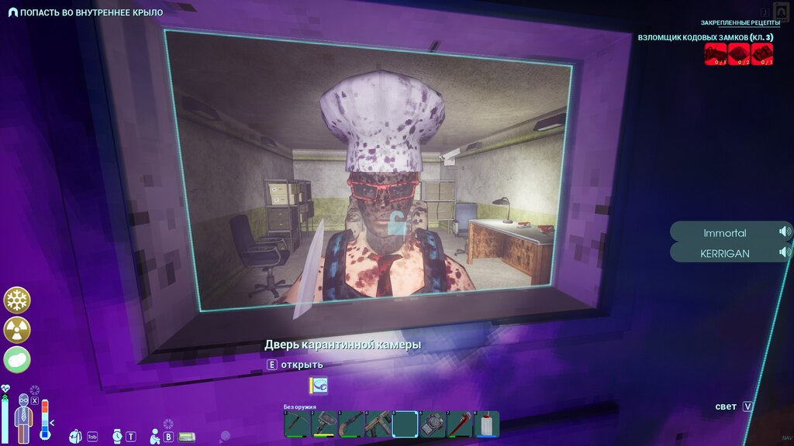
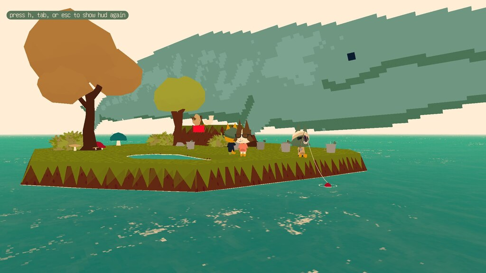

На данной прекрасной картинке изображён очень интересный момент из жизни жителей города Вест-Пойнт, штат Кентукки.
Действие происходит в скромной квартире над продуктовым магазинчиком. Это был обычный скучный день, но великий охотник AlonGun наконец-то выследил диковинную животинку - корову голштинской породы. Всё поселение пришло посмотреть на невероятное событие - освежевание только что добытой коровы.
Смотря на фотографию, можно видеть, как главный повар поселения Chechnok подходит ближе к туше, держа в руках огромный тесак. Вокруг же собрались зрители, которые раньше не видели ничего подобного...

Здесь мы уже видим космонавта Валентину Керман, которая летит посреди океана на твердотопливном ускорителе. Непонятно, какие мысли сейчас находятся в её голове.
Мне эта фотокарточка напоминает о неумолимом ходе времени, и мы, как Валентина, пытаемся бессмысленно удержаться за него.

На этой картинке можно заметить старого доброго Палача Рока, который пришёл взламывать тюремные камеры полицейского участка в городе rp_bangclaw
Сцена достаточно комичная, ведь к приходу вышеупомянутого Палача Рока, все двери камер уже открыты и в них уже никого не осталось. Возможно стоит поискать другую профессию?

Это тоже хороший момент. Во время долгих грузоперевозок в игре про дальнобойщиков, можно легко заскучать, поэтому наши герой решили развлечь себя.
Видно, как immortal каким-то неведомым и, возможно, магическим образом оказался прямо перед кабиной Andrej Pakistan, который, очевидно, неожидал такой наглости.
Непонятно как они поедут дальше, хотя может им и не сильно нужно.

Ничего особо интересного, Зомби пытается делать что-то умное на комплюктере, но, очевидно, он зомби и не может делать ничего умного.

Последняя фотография самого успешного и популярного ресторана среди морских просторов. "Клод-в-моче" посетило его "лицо", а именно Нагиев.
Нагиев позирует перед входом, надев на себя акулью голову. Он решил прийти поздно ночью, что бы насладиться морской тишиной, без лишних посетителей. Никому неизвестно, что случилось с ним дальше, но после этой фотографии его никто больше не видел...

Здесь вообще по-классике. Разбойник immortal опять попал впросак. Служба безопасности исследовательского комплекса "GATE" засадила его в камеру за многочисленные нарушения внутреннего распорядка.

Всё и так очевидно. КИТ ИЗ ТУАЛЕТА!!!